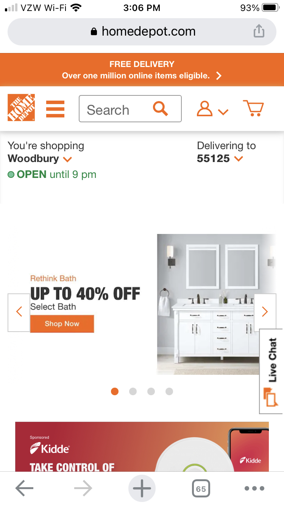
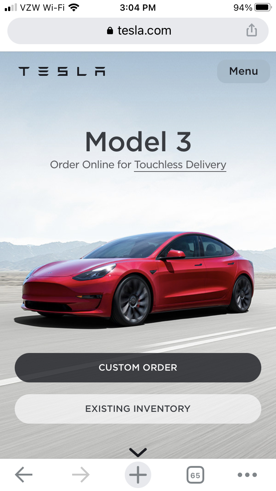

White Space
Home Depot
White space is using the space around an object or text to help bring focus and attention to it. Sometimes the "white" space isn't white, but rather a platform to display the item being presented. Home Depot uses white space in many ways on their website. They use it to frame the item being shown. They use it to highlight the sale price. Most of all, they use the white space to help keep you focused on the item you are looking for.
Contrast
Tesla
Contrast is using color to highlight and set apart one item from another. The Tesla website does this by using the car color as a significant contrast to the background. In many cases they use a red car color for a distinctive pop that gives a little racey zest to it. In one instance they use white car whis is very distinct from the background, but also since this vehicle is a more family friendly car.
Fitt's Law
Fitt's Law is stating that the amount of time to move your cursor to the target point is a function of the distance to the target divided by the size of the target. In other words, the location of your target field is important. The main Google search page is a great exmple of this. The main search query box is upper centrally located to make it easy to reach. In addition, Google has made it so the cursor is auto located to the search bar as well. They make it as easy as possible to get to the input space.